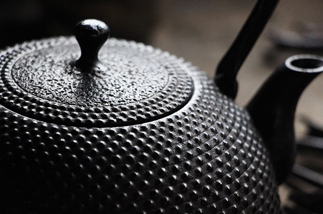
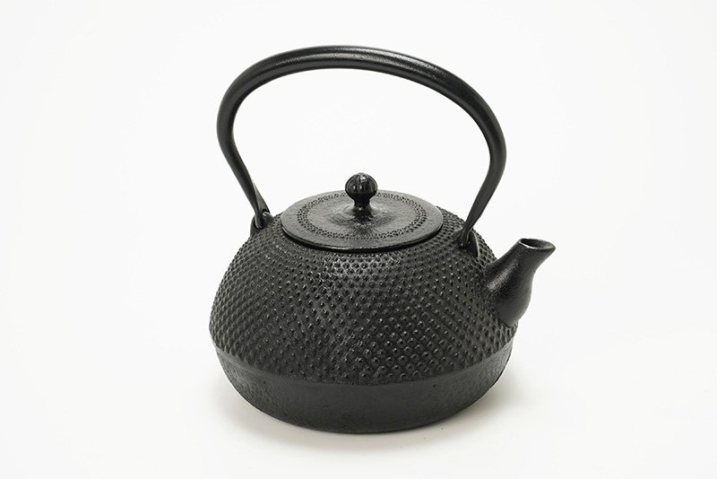
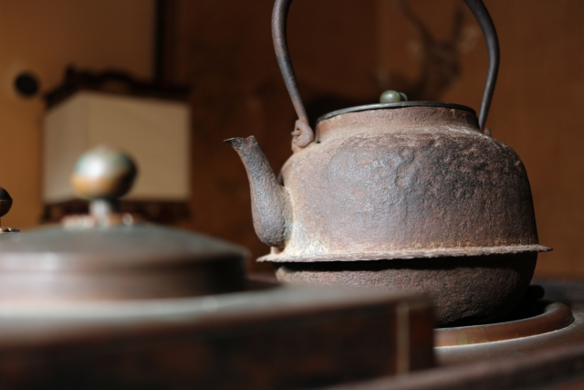
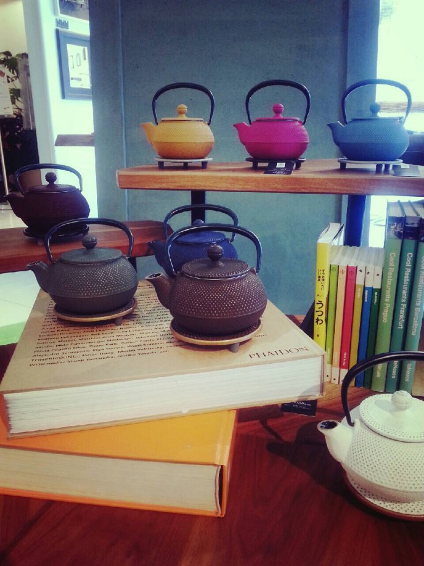
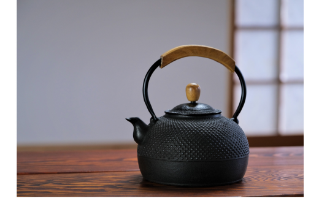
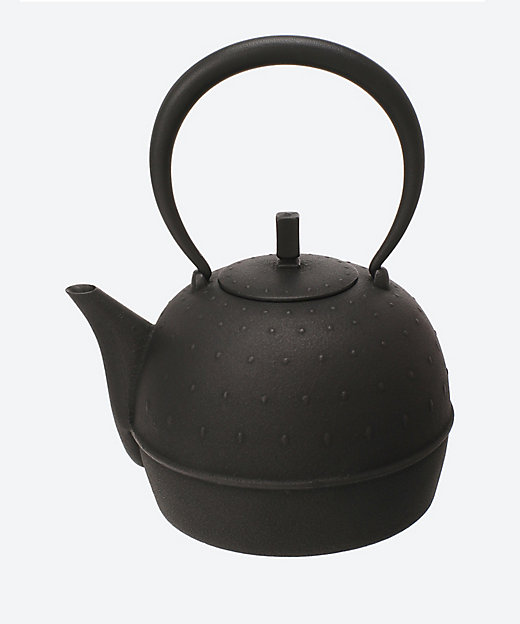
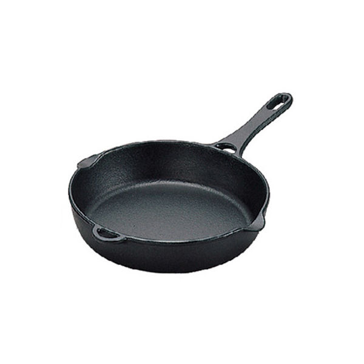
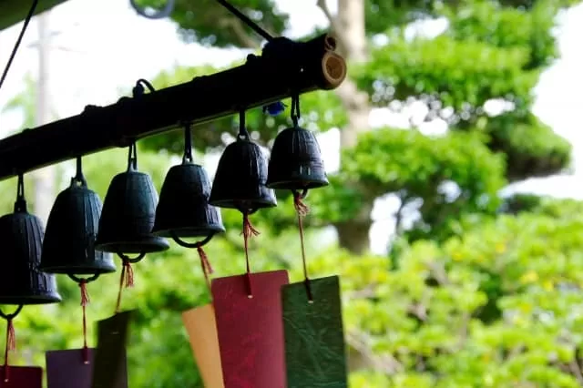
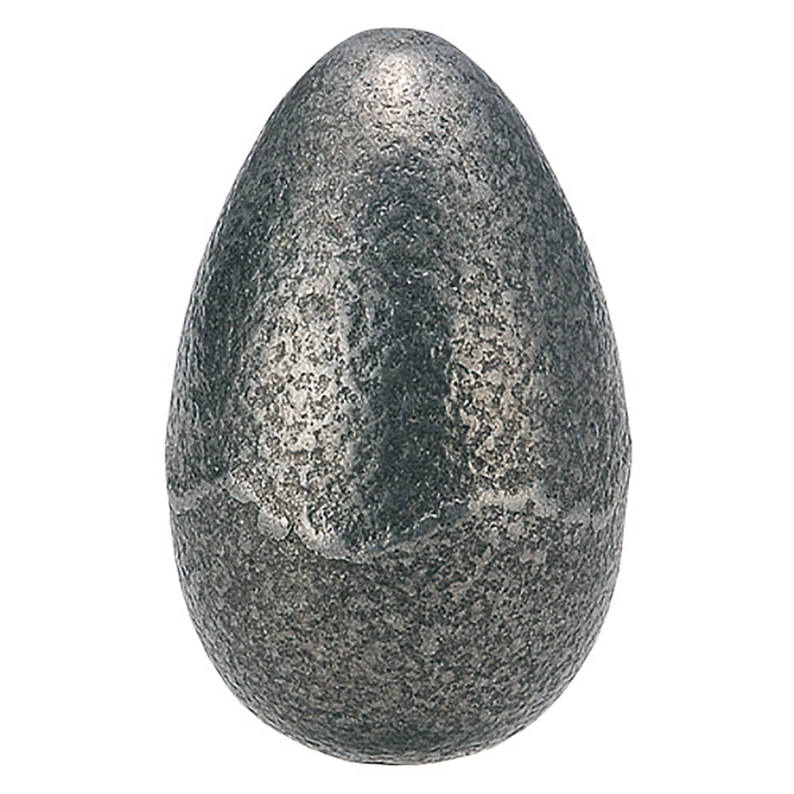

南部鉄器の産地と歴史
南部鉄器とは、岩手県の盛岡市と奥州市水沢地域で作られる鉄鋳物のこと。
鉄鋳物とは、鉄を高温で溶かしてから型に流し込んでつくられた製品を指します。
2ヶ所の産地は、それぞれが異なる起源と歴史を持つことでも有名です。
盛岡の南部鉄器
盛岡の南部鉄器は、17世紀中ごろ、盛岡藩主が京都から茶釜師を招き、茶の湯釜をつくらせたのが始まり。
「南部鉄器」の「南部」は、当時の盛岡藩が「南部藩」と呼ばれていたことに由来します。
鉄資源が豊富な盛岡ではその後も鋳物産業が発展し、のちに茶の湯釜を小ぶりにした鉄瓶が誕生。
鉄瓶は、現在も南部鉄器の代名詞的存在となっています 
奥州（水沢）の南部鉄器
水沢の南部鉄器は、平安時代末期に藤原清衡が滋賀から鋳物師を招き、 鍋や釜、農機具などの生活用品をつくらせたのが始まり。
芸術色の強い盛岡の製品に比べると、 水沢の南部鉄器は大衆向けの日用品を中心に発展したといわれています。
寺社仏閣の部品をつくって平泉文化を支えたほか、 戦国時代には大砲の弾などの武器も製造されていました。 
南部鉄器はなぜ人気？5つの理由
長く使える一生モノ
陶器などと比べて格段に割れにくい南部鉄器は、とにかく丈夫で長持ち。
大切に扱えば何代も使い続けることができ、使い込むほどに奥深い味わいが楽しめるのも魅力です。 
白湯もまろやかで優しい味に
鉄が水のカルキを吸着するので、南部鉄器で沸かしたお湯はまろやかで口あたりが良いことで有名です。
いつものお茶やコーヒーも、南部鉄器で淹れると美味しさがアップします。

鉄分溶出による健康効果
南部鉄器で調理したお湯や料理には、鉄器から溶け出した鉄分が含まれています。
身体に吸収されやすい二価鉄（ヘム鉄）なので、鉄分の効率的な摂取や貧血予防にも効果的です。
保温性が高く使いやすい
鉄は一度熱すると冷めにくく、保温性が高いのが特徴です。
厚みのある南部鉄器はとくにたくさんの熱を蓄えるので、水や食材を入れても温度が下がりにくく、
調理中に温度ムラができることもありません。
上品でおしゃれ
南部鉄器といえば重厚で深みのある味わいが魅力ですが、
なかには現代の暮らしに溶け込むスタイリッシュな製品も数多くあります。
定番の黒い鉄瓶がカラフルに変身したカラーポットは、欧州などでも人気。
海外向けの製品も盛んに開発されています。 
南部鉄器の種類と用途
鉄瓶
南部鉄器を代表する製品といえば鉄瓶。
やかんやケトルなどと同じように、直接火にかけてお湯を沸かすことができる道具です。
熱い鉄瓶を置くときに使う瓶敷きとのコーディネートも楽しめます。 
急須
見た目が鉄瓶と似ていて混同されやすい急須は、内面がホーロー加工されていたり、
茶こしが入っていたりと、お茶を淹れることに特化した道具です。
鉄瓶とは異なり、直接火にかけることはできません。 
フライパン・鍋
南部鉄器のフライパンや鍋は、煮物から焼き物、揚げ物までさまざまな料理に大活躍。
表面の細かい凹凸のおかげで焦げ付きにくく、じっくり均一に火が入るので、
「いつもの料理が美味しくなる」と評判です。
南部鉄器のたこ焼き器や卵焼き器、ホットサンドメーカー、
すき焼き鍋、中華鍋、炊飯器（ご飯鍋）なども人気があります。
風鈴
「南部風鈴」と呼ばれる南部鉄器の風鈴は、ガラスの風鈴には出せない、高く澄んだ音色が特徴。
産地の水沢駅には毎年夏になるとたくさんの南部風鈴が飾られ、「風鈴駅」とも称されています。 
皿やカップなどの食器類
ステーキ皿や酒器、マグカップ、タンブラーなど、南部鉄器ならではのシックな風合いを活かしたテーブルウェアも人気。
保温性が高いので、料理や飲み物を熱々のままいただくことができます。 
鉄玉子
玉子型の南部鉄器・鉄玉子は、お湯を沸かすときやご飯を炊くときに入れるだけで、手軽に鉄分補給ができる製品。
なすの漬物や黒豆煮の色を鮮やかにしたいときにも役立ちます。 